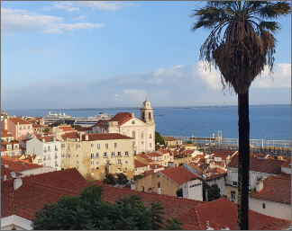

|  | |||
|---|---|---|---|
| 포르투갈 | 알파마는 포르투갈의 수도 리스본에서 가장 오래된 지역으로 리스본의 역사적 중심지에 있다. 산타마리아마이오르구에 속해 있고 타구스강에 면해 있다. 알파마에는 중요한 역사적 명소와 파두주점, 음식점, 상점들이 밀집해 있다. 전망이 좋은 상조르즈성과 12세기에 지어진 리스본대성당, 그라사성모수녀원, 상비센트다포라교회 등 역사적 건축물과 포르투갈 역사에서 유명한 인물들이 묻힌 판테앙나시오날 등이 있다. | ||
| 유럽여행 | 리스본 | 여행추천 | 알파마에는 상미겔, 산투에스테방, 상비센트드포라 등이 포함되고 바랑거리와 상주앙다프라사거리의 일부가 포함된다. 중요한 역사적 명소와 함께 알파마에는 파두 술집과 레스토랑이 많이 있다. 파두는 1820년대에 리스본에서 생긴 음악 장르로 슬픈 곡조의 노래이다. 흔히 포르투갈 기타를 치며 부른다. |
| 여행시간 | 3시간 | 여행일자 | 2022. 12. 11 |